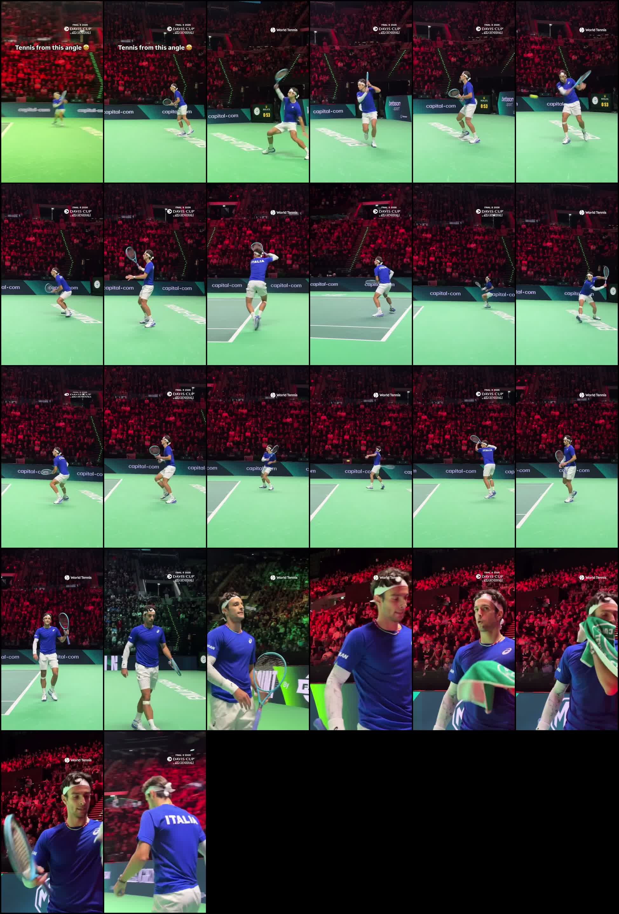
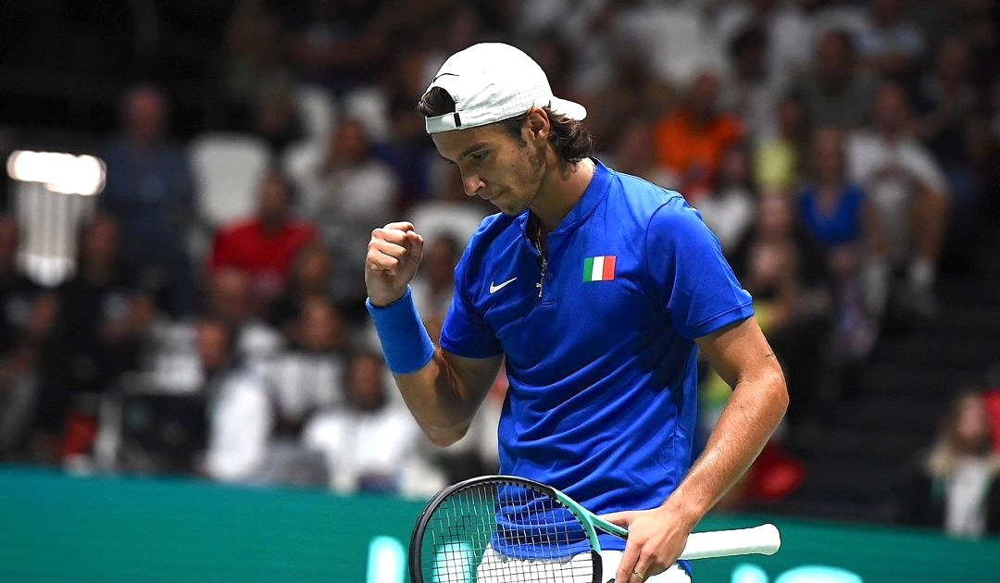

Watch the Reel here — original, footwork crop, slow motion
Video downloaded from Reel Davis Cup: 720×1280, 30 fps, 52.7 seconds (rally ~0–35 seconds, towel walk 36–52 seconds). The three versions below all play directly on the page and are downloadable: the full original, the version with the frame below the body cropped out (0–36 seconds, focusing only on the legs), and the 0.5× slow-motion version to examine each step.

7 takeaways — just about the feet
Never land with flat feet
Throughout the rally, Musetti continuously performed split-steps / light bounces on the balls of his feet, with a wide stance, hips and knees low — the quintessential pattern: starting to jump around the time his opponent hits the ball, landing when the first information about the ball's trajectory arrives, and springing off in ~150–200 ms. [Mecheri et al.; Navia et al.]
First step with the outside foot + hip rotation
Not a straight "jab" with the lead foot. The pivot/gravity drop-step mechanism — slightly moving the lead foot inward so that the center of gravity falls outside the supporting foot — outperformed the jab step in the only existing control study on the ability to touch the ball and control the return, even though the participants had been previously trained in the gravity step. [Bragg & Andriacchi 2001]
Shuffle for short balls, crossover for wide ones — the skill is the transition
The shuffle keeps the body square and balanced for 1–3-step adjustments; the crossover moves farther and faster and leads to the recovery. Musetti's described pattern — shuffle when short, crossover when recovering from a long distance — aligns with the agreed-upon hierarchy in iTPA/Kovacs terminology.
The last 1–2 meters determine the distance
The small stutter steps before hitting the ball are not “unnecessary” — they establish the distance between the body and the ball. For one-handed backhand players, this is crucial, because the one-handed backhand is uncomfortable and unstable in an open stance, so it's necessary to step into a neutral/closed stance. [Feel Tennis; coaching consensus]
Positioning based on time, not on preferences
Prefer open/semi-open stance when forced to widen or rushed (apply force with the outside foot, quick recovery); step into a neutral/closed stance for a one-handed backhand when there is time (linear force transfer, time to rotate the shoulders).
Recovery = crossover → shuffle → split again
Immediately after contact: crossover to centre, shuffle to fine-tune, split again before the opponent hits. Elite benchmark: ~3–5 direction changes per point, ~5–6 m per rally, ~3.2 km per match in one tracking study [Pereira et al.]; classical movement ratio of 70% lateral / 20% forward / 10% backward (Kovacs/Weber).
On indoor hard courts: braking instead of sliding
Bend your knees more to brake on the high-friction acrylic surface, instead of extending your legs like on a compacted dirt surface. [Damm et al. 2013]. The “braking plant” described in the clip is the court adaptation that biomechanical literature predicts in a player who grew up on clay. The knee brace is just a general reminder of the load on the knee/ankle — not a diagnosis.
The footwork loop of a rally
A rally is not a series of discrete phases — it is a closed loop. Select each phase to see what the feet do, why it's important, and the corresponding coaching keyword. Terminology according to Kovacs / iTPA.
How to read the table below: the rows are inferred phase order from the description of frames in the research task, mapped to the published term "footwork" — not frame-by-frame verified measurements. The research report does not independently count frames at a known frame rate, so no row should be read as a direct observation verified frame by frame.
| Pha | What the feet do (from frame descriptions in the research task — inferred phase order) | Terminology | Why it matters |
|---|---|---|---|
| Ready / Split | Bounce lightly on the balls of your feet, wide base, light heels, soft knees — before each time your opponent touches the ball | Split step | Pre-loading the stretch-shortening cycle; landing when the opponent hits lets the first push use the earliest ball-flight information |
| Move | The first step is explosive from the outside foot; shuffle when short, crossover when wider | Pivot / gravity first step → shuffle or forward crossover | Pushing off from the outside foot + rotating the hips to shift the center of gravity toward the ball earlier than the jab step |
| Adjust | Small stutter steps in the last 1–2 meters, feet always under the hips, head kept level | Adjustment steps | Maintaining body–ball distance without lunging; surviving with a one-handed backhand |
| Load | Forehand: open/semi-open, outside (right) foot loaded, hips low. Backhand: step into neutral/closed, right foot forward | Open / semi-open forehand load; neutral/closed backhand step-in | Open = rotational power + quick recovery; stepping into closed = linear power transfer + shoulder-rotation time for the one-handed backhand |
| Recovery | Crossover to the center, then shuffle, and back to the baseline. | Front crossover recovery → shuffle → re-split | Crossover to cover the distance; shuffle to restore the square base; split to start a new round |
| Repeat | Split again before the opponent's next touch of the ball — don't stand with your feet flat between shots. | Re-split | The whole rally is a loop: split → move → adjust → load → recover → split |
| Retreating for overheads | Turn and run (side-to-side turn, backward crossover), avoid long backward steps like backpedaling | Drop-step turn → backward diagonal crossover | Faster, more balanced, and much safer than backpedaling facing the net |
| Phanh | Short plant steps, force-absorbing bent knees, no long skids — all the way across the hard court | Braking plant (hard court) | High shoe–court friction: brake by flexing the joints instead of sliding (see section 7) |
| 36–52 seconds | Walking out to get a towel — the bounce on the balls of the feet stops completely | — (outside the rally) | The contrast highlights the "ready" state in the rally: it is intentionally turned on/off. |
⚠ The low court-level camera angle exaggerates base width and knee bend while hiding depth (how far behind the baseline Musetti is). A
Jump at the right time when the opponent hits, land when the ball just shows its direction
The split step is a small two-footed hop, timed to the opponent's contact, landing on the balls of the feet in a wide, low base, ready to push in any direction. Kovacs notes: good players do not land with both feet at once — they react in the air and touch down first with the foot farther from the target, a beat earlier.
Measured timeline when returning a serve — Navia et al. 2022 Peer-reviewed
12 male professionals, hard court, 300 Hz analysis, time 0 = opponent racket contact. Real rally values will differ — use this as a reference, not a pass/fail standard.
Mecheri et al. — J Sports Sciences 2019
All groups (top ATP/WTA and young ITF players) start splitting around the time the opponent touches the ball and land when early ball-flight information is available. Leg stiffness rises with level; in elite men, first-step timing correlates with leg stiffness (r² = 0.54) — stiffer legs allow a later step because they rely on better information. Navia: when movement begins sau the moment of touching the ball, no response errors.
Hop height & landing — less directly measured
Secondary coaching syntheses report: ~5–10 cm height, landing slightly wider than the shoulders, weight on the balls of the feet, knees bent ~20–30°, ground-contact time (landing → push-off) under ~200 ms in elites vs 250–350 ms in club players. Note: The original literature strongly supports claims about timing and leg stiffness more than any specific centimetre figure. On-court keywords: “Jump to their swing, land to their hit.”
Why it works — and where opinions differ
Landing pre-stretches the quadriceps, calves and hip extensors; if you push off immediately, the stretch-shortening cycle returns elastic energy — waiting too long turns it into heat. Since simple visual reaction is already ~200 ms, the split must be prepared before knowing the direction. Disagreement: some coaches shout “land” on contact touch the ball”, while the serve data shows a high point of contact at sau touching the ball (~130 ms). These two things are not contradictory if “at the right time” is understood as start the hop at contact — but calling “land” before Touching the ball will cause the charged energy to leak before directional information is available.
Applied to Musetti: “split-step / continuous light bouncing on the balls of the feet, wide base, never flat-footed” is the visible signature of the Mecheri/Navia model — split again before every opponent contact throughout the 35-second rally, not just the first one. On an indoor hard court the ball travels fast after the bounce, so landing right after contact (rather than much earlier) preserves elastic loading for the first step.
Shuffle or crossover? The distance decides.
iTPA standardizes over 35 movement patterns — pivot, jab, lateral shuffle, forward/backward crossover, drop-step for forehand, mogul step, recovery crossover, etc. Using a common language is important because “shuffle” and “crossover” are often taught as opposing movements, whereas they are actually distance-based tools.
🧭 Step Selector — try it now
Three-step horizontal response — Bragg & Andriacchi (Stanford, 2001)
- Jab step: take a step forward with the lead/outside foot towards the ball.
- Pivot step: Stand on the lead leg, rotate your hips, and step with the opposite foot.
- Gravity / drop step: bring the lead foot inward, away from the ball, the center of gravity falls outside the support base so that gravity assists the movement.
Results (n=10 club players): gravity step group 52% more likely to touch the ball and 100% better return control compared to the jab (p < .05); the center of gravity moves outside the base of support at ~0.15 seconds (gravity) compared to ~0.3 seconds (pivot) and ~0.5 seconds (jab). Mandatory caveat: Participants had been pre-trained in the gravity step, and the lab movement study had only n=1 — promising evidence, not a definitive conclusion.
“Crab shuffle” for everything?
Traditional coaching defaults to a crab-style shuffle for all lateral movements. A 2026 coaching analysis argues the opposite: an early crossover for all significant distances, because keeping the body square during a high shuffle slows down hip rotation and can put strain on the knees in a vulnerable upright plant position. Balanced reading of the report: Shuffle is not wrong — it has its limits. Small adjustment = shuffle; medium distance = shuffle with hip rotation; long distance = immediate crossover. Musetti's pattern (short shuffle, wide crossover/recovery) fits perfectly into this balanced system.
How did Musetti adapt — a clay-court player on an indoor hard court?
Musetti is widely described as “clay-first”: “on clay, Musetti's game is most effective… excellent movement” [LiveTennis]; “a true dirtballer… precise and versatile movement” [Second Serve]. The plant stop on a hard court shown in the clip (instead of sliding on clay) and the choice of a short shuffle/crossover — rather than a long sliding recovery — are typical of a player who grew up on clay courts and is adapting by shortening her stopping steps for high-friction surfaces. No specific ground reaction force (GRF) data for Musetti were found in any peer-reviewed study. — this is an inference from court-surface biomechanics plus the observed pattern, and is labelled as such.
The last 1–2 meters — where the one-handed backhand is saved or broken
What is the purpose of the adjustment step?
The small stutter steps in the last 1–2 meters are to control the distance to the ball. Straightforward coaching diagnosis: players who “take a big step instead of two or three small adjustment steps almost always have distance issues.” Too close → the swing is restricted (the arm cannot be fully extended); too far → the player has to reach, losing balance and control of the racket face.
Why the one-handed backhand raises the demands
Feel Tennis states the core commitment: The one-handed backhand is uncomfortable when hitting in an open stance. (unstable, lacking in power), which is very different from the forehand and two-handed backhand, which work well in an open stance. Therefore, the footwork of a one-handed player must be "refined" to take a step into the neutral or closed position whenever possible. Musetti himself, in the US Open clip, lists the "secrets" of his backhand: (1) early preparation, (2) right foot forward and leaning on the right foot, (3) smooth movement — i.e., footwork and weight transfer, which the player himself presents as prerequisites, not accessories.
Distance-based pattern (Feel Tennis)
- Short (1 step): the same 1-step neutral pattern for both sides.
- Medium (2–4 m, 2 steps — the most common single-person situation): forehand/two-handed backhand use 2 steps into an open stance; one-handed backhand uses “shuffle then step in” — Quick side shuffle and then step into neutral. Stop shuffling → lunge or take 3 steps and hit late.
- Wide (3 steps): both sides use 1-2-3 (crossover → step → plant), but the one-handed backhand still prioritises neutral for control/power.
- Deep ball: forehand can be hit open while retreating; the one-handed backhand should “Step back and then step in” (2 steps back to create space, 1 step forward to neutral) if there is time.
- Short ball: turn first, then shuffle, then step in and settle — running first, turning late is a classic mistake.

Open, semi-open, or stepping into closed?
Definition based on the hip orientation at the moment of ball contact: open = hip/navel facing the net; semi-open = hip at ~45° to the net; closed = hip perpendicular to the net (facing the sideline). Select each stance to compare foot positioning, power, and recovery speed.
Crossover takes care of the distance, shuffle takes care of the accuracy, split takes care of the readiness
After hitting the ball: (1) crossover recovery to the front — push through the outside foot, cross over to the center; (2) shuffle to adjust the position behind the baseline; (3) split again before the opponent hits the ball. For a very wide defensive position, iTPA also lists the mogul step (quickly turning the toes inward and shifting the weight to the center, as in the analyses of Nadal) and the 180° defensive recovery.
Median distance covered per rally
5.2 m when serving, 6.2 m when returning — Pereira et al., J Sports Sciences 2017, automatic tracking of 8 professional players.
Total distance per match (± 880 m)
1,702 m in set 1 and 1,458 m in set 2 in the same study by Pereira et al. Another meta-analysis (ATP 2016 data) gives ~4.5 km/match — The two figures differ due to variations in sample size, tracking methods, and match durations; the report presents both figures without averaging them to avoid misleading precision.
Direction changes per point
~360–600 times in a two-set match (~60 points/set according to the summary of physical performance data). Median rally on hard court: 3.5–4.5 shots, each requiring a split step → first step → adjustment/loading → full recovery.
Classical directionality ratio — Weber et al. 2006 / Kovacs 2009
ATP 2016 data in the same summary: ~20 m on average per point, ~42 m for rallies of 5 shots or more. The sign of peak performance is not in the total distance but in recovery time: The person who shuffles the entire way back will be late; the person who only crossovers will return in an unbalanced state.
Turn first — both when approaching a short ball and retreating for a lob
Approaching short balls (~20% of all movement)
Template for both sides: turn and step forward → shuffle → step in and settle. Turn first (the unit turn starts when the opponent touches the ball, at the same time as the split step), then move. Running straight into the ball and turning late will cause the distance to be rushed. It is this 20% that determines whether a short ball is attacked in balance or rushed into.
Retreating for overheads — strong coaching consensus
- Never backpedal for long when facing the net (chest facing the net, heels facing the baseline). Essential Tennis: backpedaling “slow and dangerous… the number 1 mistake of recreational players on overhead shots.”
- Turn sideways first: For a right-hander: step the right foot back behind the left (closed/side stance, toes toward the side fence), then move back with an even crossover. horizontal shuffle or crossover, raise the racket early, raise the hand without the racket to catch the ball.
- USTA drill plan teaches drop-step, crossover and run for overhead — the order is always rotate first, then move.
- Safety: Backpedaling while looking up at the ball poses a risk of falling backward and sustaining a head injury; turning sideways helps maintain balance and allows for the transfer of force from backward to forward upon ball contact.
Applied to the clip: “Turn and run (without long backpedaling) when being pushed back to catch an overhead” exactly matches the agreed-upon pattern: lateral turn, crossover backpedal, touch the ball in front, then step back in and split again.
The shoes grip the court — so the body must absorb the braking force
Damm et al. — Sports Biomechanics 2013
8 participants, lateral jumps + running forehand, clay vs cushioned acrylic hard court: players adjust the friction they use to the surface — Less knee bending facilitates sliding on clay courts, while more knee bending contributes to braking on hard courts.. The knees are also less bent when they touch the ground and are at the peak of bending on the hard court when hitting a running forehand.
Starbuck et al. — J Sports Sciences 2016
180° turn on acrylic vs clay: kinematic adaptation and foot pressure by surface (toe/big-toe pressure enables sliding on clay); players with clay-court experience show a later knee-bending peak — the author suggests that this may reduce the load / risk of injury.
| Factors | Indoor hard court (this clip) | Clay (Musetti's foundation) |
|---|---|---|
| Stop mechanism | Short plant, bend knees/hips to decelerate | Long glides, legs relatively straighter |
| Shoe–court friction | High — grip shoes, body absorbs deceleration through ankle/knee/hip flexion | Low — a loose top layer lets the shoes slide, spreading the stopping force over time and reducing peak force |
| Force effect | Higher peak force in a shorter time | Lower peak force due to slip extending the stopping time |
| Key skills | Suppress long slide, replaced by articulated plant | Control the length of the slide and stop at the right point |
The broader picture of trauma
A biomechanics expert summarized on MedicalXpress (2019): Painful injuries are 5–8 times more likely to occur on high-friction surfaces than on loose surfaces that allow sliding, according to Nigg's study of over 1,000 players; on high-friction surfaces, athletes land with straighter knees and rotate more during directional cutting movements — a pattern associated with ACL risk. This is expert summary, labeled as such. Specifically, slide-stopping on hard courts at the elite level: a 2025 study (J Exercise Science & Fitness, 100 elite college athletes, accessed via Scribd record — weak source) reported that slide-stopping reduced the time to hit short shots by 10% and long shots by 7% compared to traditional stopping — It's just a single study, not a definitive conclusion yet..
The knee brace — a general consideration only, not a diagnosis
A patella/knee brace seen in one frame says nothing about Musetti's health, and this report does not speculate. In general, the described hard-court braking pattern (short plant, knee flexion to brake, hundreds of direction changes per match) loads the knee extensors eccentrically and demands ankle stability on lateral plants. Preventive considerations for this movement pattern (general, not specific to Musetti): centrifugal strength of the quadriceps/hamstrings to decelerate; hip/glute strength to distribute the braking force upwards instead of concentrating it on the knees; ankle flexibility/stability; gradual increase in hard court mass (especially when transitioning from clay courts); appropriate shoes for the court surface. Pain, swelling, or instability all require a professional medical assessment — a knee brace is not a substitute.
Clay rhythm, one-handed-backhand discipline
Limited resources — to put it bluntly: No peer-reviewed biomechanics articles on Musetti were found, nor was there any official ATP/ITF footwork analysis of him. The profile below is a compilation of the player's own descriptions, reputable tennis press, and coaching commentary — each point cites the type of source. Where the source only provides adjectives (“smooth,” “graceful”), the report retains them as adjectives rather than converting them into metrics.
Self-description of backhand footwork
Prepare early; Right foot forward, resting on the right foot; smooth movement [Reel Instagram US Open, 2025]. Implication: Musetti sets up his backhand as a step-in/weight transfer shot — perfectly aligning with Point 3.
Mobility is a strength
“Precise and versatile movement, meeting the challenge of every surface, solid defence on grass and well-organised attack on clay… comfortable deep behind the baseline as well as in cat-and-mouse points at the net” [Second Serve]. LiveTennis: most effective on clay courts thanks to excellent movement; on hard courts, "competitive but less consistent".
Mouratoglou: excellent — but tends to be passive
“Movement, forehand, backhand, ball touch, and volley are all excellent” but he tends to be “generally too passive”, hesitating between attacking and defending. This is a limitation. tactic with footwork consequences: a passive court position (deeper recovery, later step-in) versus an imposing position (early step-in, forward recovery).
Limited citations (related to footwork)
Consistency at the most crucial moments / maintaining a high level of performance over five sets [LiveTennis]; passive/hesitant between defense and imposition [Mouratoglou]. Both are expressed in footwork in the form of recovery depth, not a faulty step pattern. The 2026 context only involves footwork at the following level: the season was interrupted due to injury, the ranking dropped from the career high of No.5 (January) to No.26/27 during the Davis Cup week, winning the Lyon Open in October, returning to the Davis Cup to face South Korea on November 25, 2026. [Last Word on Sports; SportsEncounter] — The physical cost of this movement pattern is the repetitive braking/deceleration load mentioned in Section 7, which remains a general observation, not a diagnosis.

Summary of special points (inference, labeled): Musetti's special feature is not a novel move — but rather combination between the clay-court rhythm (continuous bouncing, sliding heritage, comfort recovering deep) and the step-in discipline of the one-handed backhand, now compressed onto indoor hard courts, where braking replaces sliding and step-in time is shortened. The Davis Cup clip, as described, shows exactly that compression: the bounce is kept, the slide is dropped, and shuffle-then-step-in is kept.
7-level progression — practice the right patterns in the clip
Footwork only — shadow swings or live balls; no shot-technique coaching beyond foot position. Only progress when the previous level is clean at high speed. Hard-court notes flag HC. Select a level to see the exercises, keywords, and mistakes to avoid.
🗓 Sample 25-minute workout (2–3 times/week)
Level 1 (5 minutes) → Level 3 (6 minutes) → Level 4 (7 minutes) → Level 5 (7 minutes). Add Level 6 / Level 7 on alternate days. Stop a set when footwork deteriorates (flat feet, crossing when shuffling, high plant) — quality over quantity, especially on hard courts.
Summary of common errors: landing before opponent contact · first-step jab from a high stance · shuffle for everything · lunging instead of stuttering · one-handed backhand from an open stance by default · recovering only by shuffle · backpedalling for overheads · straight-legged braking plant on hard courts.
What to look for in each frame — and the limits of 30 fps video
This is methods for you to apply yourself When reviewing the videos (including all three videos at the top of the page), it is not to be asserted that the specific steps in this rally were measured frame by frame — as stated in the verification section, they have not been independently frame-counted.
- Split timing.Mark the frame of opponent contact (ball on the strings / click). Count frames to: foot leaves the ground, first foot lands, second foot lands, first lateral push.
- Base width at landing.Estimate the distance between the feet relative to the shoulder width / court lines. Wide stance + toes pointed forward + low hips = ready; narrow stance + flat feet + high hips = vulnerable.
- The first type of step.Jab (lead foot points toward the ball), pivot (lead foot stays, hips rotate), or gravity/drop (lead foot moves inward). Freeze the frame where the opposite foot leaves the ground.
- Number of steps per stroke.Count the number of times the foot touches the ground from the split landing to the plant. Classify the movement steps (shuffle/crossover/run) and the adjustment steps (stutter in the last 2 meters).
- Plant / stance.At ball touch, classify as open/semi-open/neutral/closed based on hip and leg alignment; note external leg load and knee flexion.
- Recovery.The type of the first recovery step (crossover or shuffle), the time/number of steps to return to the center, and whether there is a split again before the opponent's next touch of the ball.
- Phanh.On a hard court, does the plant foot slide (how far) or stay planted with bent knees? Measure the sliding distance along the court line if visible.
Frame-limit calculator — drag to try
Simple index table for each shot: split ground contact delay (ms) · type of initial step · number of movement steps · number of adjustment steps · stance · number of steps to return to the center · split at the right time? (Yes/No). Rally summary: % of timely splits, average adjustment steps, shuffle:crossover ratio. Conclusion for this Reel: pattern classification (split/shuffle/crossover/stance/turn-and-run/braking plant) is supported by the described frames; split timing in milliseconds, exact step counts per shot and slide distance are None — that's why the report didn't make them up.
Unverified — open questions
- Exact timeline / number of steps for each frame of the 0–35 second rally: Facebook replay without logging in does not allow reliable rewinding; the original fps is unknown. The phase order is based on observations during the research task.
- Musetti's own biomechanical parameters (ground contact time, GRF, split height, number of steps per rally): no peer-reviewed or official ATP/ITF sources were found. All figures cited are from studies on top players in general.
- Meaning of the pillow band: only visible. Do not search for or infer medical information.
- Opponent / context of correct score outside Davis Cup Final 8 2026: not needed for the footwork-only scope; score was deliberately excluded by the task.
- Braking-sliding ratio on hard court (Ji et al. 2025): accessed only through the Scribd record; considered an index confirmation from a single study.
References
All key statements on the page are referenced to the sources below. Clearly distinguish between peer-reviewed sources, training materials, and training comments/opinions.
Case study (in-person verification on November 26, 2026)
- Davis Cup Facebook Reel (Musetti): facebook.com/reel/1196936172757682
Biomechanics / original research
- Mecheri et al., split-step timing & leg stiffness (J Sports Sci 2019): pure.port.ac.uk
- Navia et al., spatiotemporal control returning first serves (J Sports Sci 2022): pure.port.ac.uk
- Bragg & Andriacchi, lateral reaction step (Stanford, 2001): ojs.ub.uni-konstanz.de
- Damm et al., surface traction & kinematics (Sports Biomech 2013): pubmed.ncbi.nlm.nih.gov
- Starbuck et al., court surfaces & biomechanical response (J Sports Sci 2016): eprints.whiterose.ac.uk
- Pereira et al., distances covered (J Sports Sci 2017): researchgate.net
- Biomechanics of forehand stroke (review): researchgate.net
Coaching / movement language
- iTPA / Kovacs movement & footwork booklet: tennisfix.net
- Kovacs, Major Movements (Human Kinetics): us.humankinetics.com
- Feel Tennis, one-handed backhand footwork: feeltennis.net
- CoachXT backhand diagnostic checklist: coachxt.sg
- TennisWhisperer, crossover vs crab shuffle (coaching tips): tenniswhisperer.com
- SwingVantage sidestep/shuffle glossary: swingvantage.com
- PTR/TennisGate recovery steps: ptr.tennisgate.com
- Tennis Academy footwork patterns & drills: tennisacademy.app
- Essential Tennis overhead footwork (transcript): lingq.com
- Let's Play Tennis lob & overhead guide: letsplaytennis.com
- MyTennis.uk smash footwork: mytennis.uk
- Ten Things Tennis conditioning synthesis: tenthingstennis.com
- Dominating Tennis split-step synthesis: dominatingtennis.com
Musetti / Davis Cup & video analysis
- LiveTennis Musetti profile: livetennis.com
- Second Serve, Musetti fluidity essay: thesecondserve.com
- US Open Instagram reel (Musetti backhand tips): instagram.com
- Mouratoglou Instagram reel: instagram.com
- Last Word on Sports, Italy Davis Cup 2026: lastwordonsports.com
- SportsEncounter, Musetti vs Hong 25 Nov 2026: thesportsencounter.com
- LiveTennis Davis Cup 2026 preview: livetennis.com
- CoachNow frame rates: coachnow.com
- MyTennisCloud video analysis guide: mytenniscloud.com
- CrunchTime online vs personal coaching: crunchtimecoaching.com
- MedicalXpress sliding/injury expert explainer: medicalxpress.com
Photo: hero — Diretta.it/Livesport CDN; photo of backhand — SuperTennis; photo of celebration — Tennis24.gr. Facebook displays the login dialog during the study; the dialog is closed with its own Close button — no login, no account creation, no entry of login information.
← Previous | Footwork Home | Next →